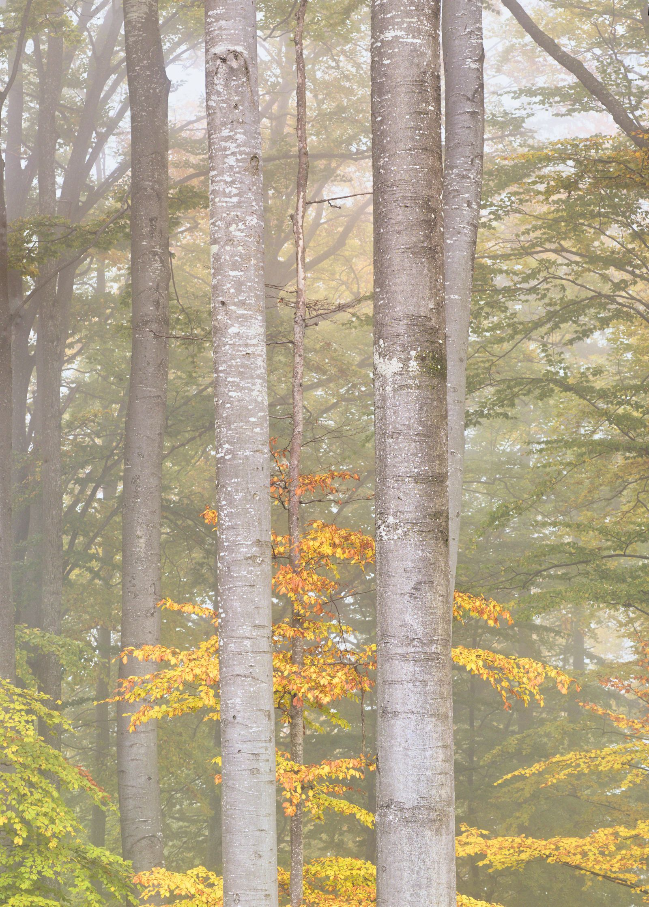

CASE 01 — ESTATE WOODLAND
The lion's mane in the felling coupe
A routine pre-felling check that stopped being routine on the second morning, when a protected fungus turned up on three of the trees marked for the saw.

THE ASK
The estate planned to fell a coupe of mature beech and restock. Before the contractors came in, the woodland manager wanted a fungal inventory — partly for the estate's own records, partly because veteran beech is precisely where protected fungi hide, and felling first and finding out later is an offence, not an oversight.
WHAT WAS DONE
Two visits a fortnight apart, walked on transects with every veteran tree examined at the base and in its hollows. On the second visit, lion's mane (Hericium erinaceus, Schedule 8, Wildlife and Countryside Act 1981) was fruiting on three beeches inside the coupe. It was photographed in situ and GPS-mapped, not touched. The same trees carried giant polypore (Meripilus giganteus), whose root decay bears directly on how safely a veteran beech can be left near a ride.
THE OUTCOME
The coupe boundary was redrawn to exclude the three host trees and their neighbours; restocking moved to the coupe's eastern half. The tree-safety inspection cycle for the avenue was shortened in light of the root-decay findings, and the estate now commissions the check before any coupe is marked. 212 species were recorded across the two visits; the lion's mane record went to the county recorder the same week.
“Helen's survey found the lion's mane a fortnight before the contractors were due in. The felling plan was redrawn around those trees, and for the first time our paperwork was ahead of the problem instead of behind it.”